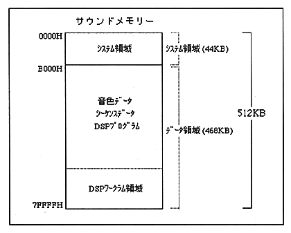

System area
The program storage area and work area for operating the sound driver. The work area includes a program work for the sound driver and a system interface area for interfacing with the main system and sound development system. This area is a fixed area of 44KB and cannot be used for other purposes.
Data area
An area for storing sound data. Three types of tone data, sequence data, and DSP program are stored in various combinations (mappings). It is also used as a PCM stream playback buffer for PCM stream playback. In this area, the stored data and its mapping always change depending on the game and scene. In other words, sound data is mapped for each scene within this 4Mbit range.
DSP workram area
Area for DSP delay RAM and effect coefficients. Therefore, this area is not necessary when DSP is not used. Note that the start address of this area must be on the 2000h boundary due to hardware restrictions, and the delay RAM and coefficient area sizes vary depending on the DSP microprogram used.